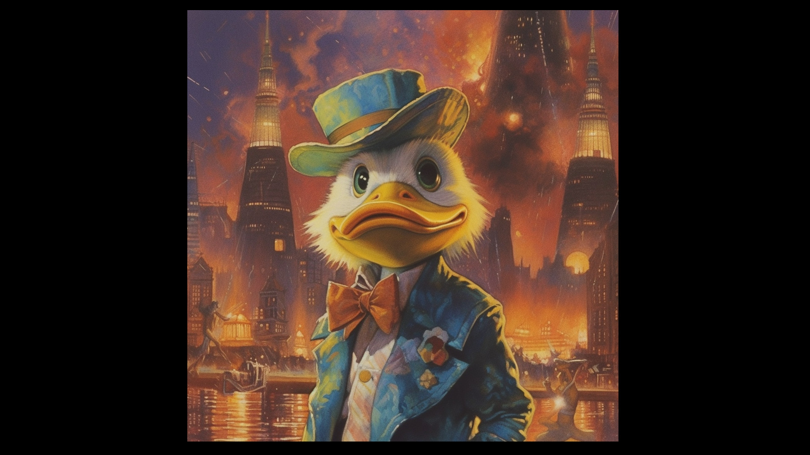

Revisiting the Marvelous Beginnings: An Ode to the First Marvel Movie, Howard the Duck

Greetings, dear aficionados of the offbeat and peculiar. Today, we delve into the enigmatic history of the first Marvel movie, Howard the Duck. This piece aims to enlighten readers on the origins of this unique character, the individuals behind its creation, and the journey from comic book to silver screen. Moreover, we shall explore the resurgence of Howard the Duck in the Marvel Cinematic Universe and his newfound significance in popular culture.
The Birth of Howard the Duck and the Marvel Comics Landscape in 1986
Howard the Duck, a satirical anthropomorphic duck, made his comic debut in 1973. Created by writer Steve Gerber and artist Val Mayerik, Howard gained a cult following for his witty humor and biting commentary on American society. As a character who both embodied and defied the norms of comic book heroes, Howard captured the imagination of readers who sought something beyond the conventional superhero.
Fast forward to 1986, Marvel Comics, under the leadership of Editor-in-Chief Jim Shooter, faced a challenging period. In search of fresh opportunities and financial respite, Shooter sought a collaboration with Lucasfilm. This partnership aimed to bring Howard the Duck to life on the big screen, capitalizing on the character's unique appeal.
The Collaboration with Lucasfilm and the Visionaries Behind the Scenes
George Lucas, the visionary filmmaker behind Star Wars, saw potential in the unconventional character of Howard the Duck. As the producer of the film, Lucas was instrumental in connecting Marvel Comics with Lucasfilm, paving the way for the movie adaptation. Enlisting director Willard Huyck and his wife, Gloria Katz, to pen the script, Lucas set the stage for the cinematic incarnation of Howard.
The Casting and Compensation of Howard the Duck
The casting of Howard the Duck presented a fascinating tale of contrasts. Lea Thompson, who portrayed Beverly Switzler, was paid a significant sum of $1.25 million. In contrast, Chip Zien, the voice behind Howard, earned a mere $10,000 for his vocal talents. The total budget for the actors amounted to approximately $3 million. When adjusted for inflation, this figure would amount to roughly $7.2 million in today's currency.
Comparing the Howard the Duck cast budget with the Avengers: Endgame cast budget, the difference is staggering. Endgame boasted a budget in excess of $300 million, with A-list actors commanding millions of dollars for their roles. For context, Robert Downey Jr. reportedly earned $75 million for his appearance in Endgame. If we were to compare Lea Thompson's $1.25 million with a similar role in Endgame, it's evident that the pay scale has grown exponentially. For example, Paul Rudd, who played Ant-Man, reportedly earned around $1.5 million for his role in Endgame. Adjusting Thompson's $1.25 million for inflation would result in a figure of approximately $2.9 million, clearly illustrating the vast disparity in earnings between the two films.
Steve Gerber, Marvel Comics, and the Genesis of Destroyer Duck
In the world of comic book artistry, Steve Gerber, Howard's creator, found himself embittered with Marvel. Despite the character's success, Gerber received little financial reward and had minimal influence on the film adaptation. Frustrated with Marvel, Gerber severed ties with the company and birthed a new avian creation: Destroyer Duck.
Destroyer Duck emerged as a protest character, representing Gerber's dissatisfaction with Marvel's treatment of creators and their intellectual property. The character allowed Gerber to explore themes of corporate greed and exploitation, providing an outlet for his creative and professional frustrations. In many ways, Destroyer Duck was a symbol of rebellion, a rallying point for creators who sought fair treatment from comic book publishers and a more equitable share of the profits generated by their work.
The Making of Howard the Duck and the Challenges Behind the Scenes
The production of Howard the Duck was fraught with challenges. Creative differences between George Lucas and Willard Huyck led to a disjointed vision for the film. Lucas envisioned a family-friendly adventure, while Huyck was keen on pushing boundaries with adult humor and themes. These clashing visions resulted in a film that struggled to find its footing and resonate with audiences.
Despite the challenges, Howard the Duck was released in 1986, with a blend of live-action and animation that was groundbreaking at the time. The film explored themes of identity and belonging, which were seldom addressed in its contemporaries. Unfortunately, the film was met with harsh criticism and failed to recoup its $37 million budget, leaving it branded as one of the worst movies of all time.
he Resurgence of Howard the Duck and His Growing Fanbase
Despite the film's initial failure, Howard the Duck experienced a resurgence in popularity with the advent of the Marvel Cinematic Universe. His cameo in Guardians of the Galaxy rekindled interest in the character, introducing him to a new generation of fans. Subsequent appearances in Guardians of the Galaxy Vol. 2 and Avengers: Endgame further solidified Howard's return to the spotlight.
These appearances not only revived the character but also highlighted the significance of Howard the Duck in the broader context of pop culture history. As the first Marvel movie, Howard paved the way for countless comic book adaptations, setting the stage for the superhero renaissance that has since dominated the box office.
Why Howard the Duck Matters and Its Place in Alt Investors' Portfolios
In light of Howard's resurgence and the growing appreciation for this offbeat character, it's worth considering the value of Howard the Duck memorabilia as an alternative investment. As a pop culture icon with a unique history, Howard the Duck paraphernalia is likely to become increasingly sought after by fans and collectors alike.
By investing in Howard the Duck memorabilia, alt investors can diversify their portfolios with a slice of pop culture history that has transcended its initial failures and emerged as a cult classic. With a dedicated fanbase and a new generation of admirers, Howard the Duck represents a fascinating investment opportunity for those willing to embrace the unconventional.
The Legacy of Howard the Duck
Howard the Duck's journey from comic book pages to the big screen and beyond is a testament to the enduring appeal of unconventional characters. As the first Marvel movie, Howard the Duck occupies a unique place in pop culture history, and its recent resurgence in the Marvel Cinematic Universe has reaffirmed its relevance.
This quirky, wisecracking duck from another dimension may not be the most celebrated character in the Marvel Universe, but his story serves as a reminder that the unconventional can capture the imagination and create lasting legacies. As fans continue to rediscover and appreciate Howard the Duck, it's clear that his place in pop culture history is secure, and his influence will be felt for years to come.